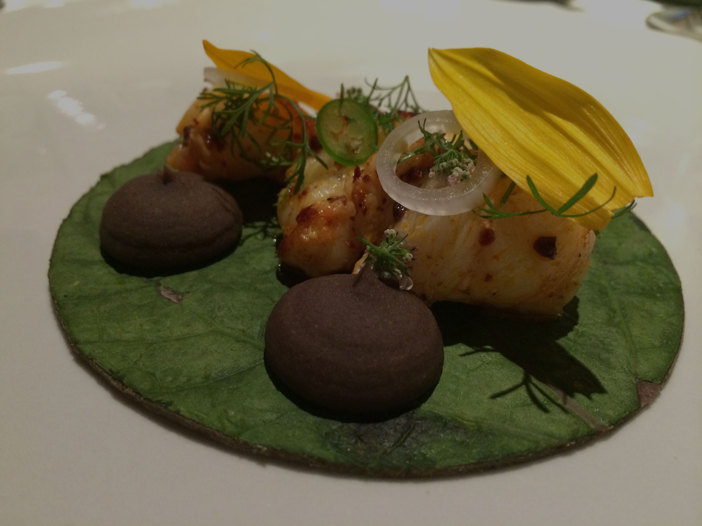
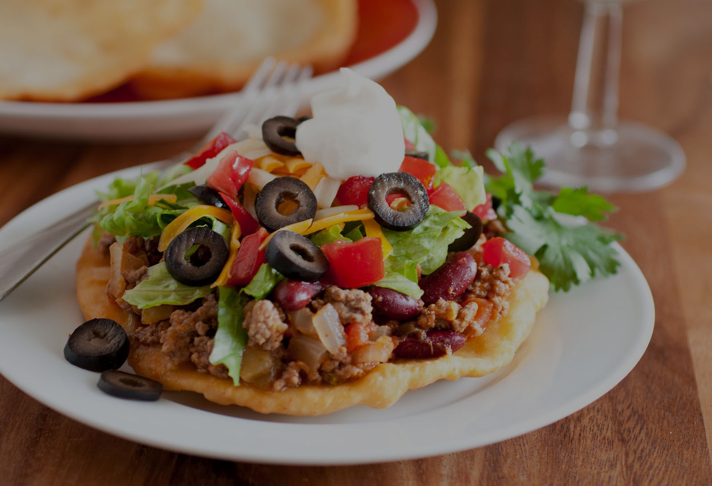
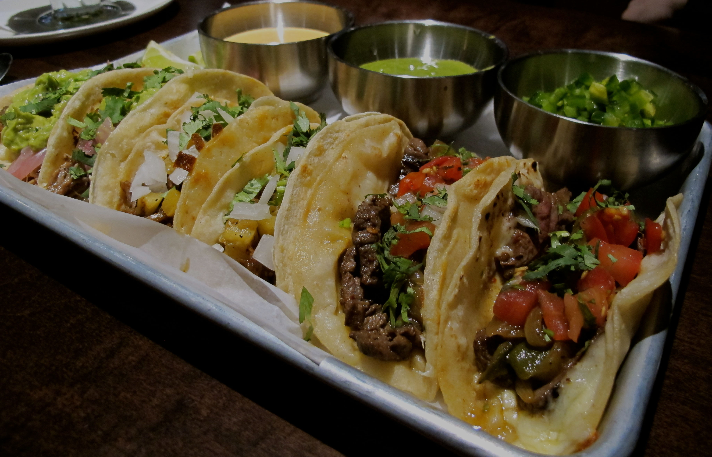

Un taco de lujo
Hasta el momento, el taco más caro del D.F. se vende en la taquería Pujol (Polanco). El menú de degustación cuesta $1,200 y el taco por separado cuesta $80 pesotes.

Día del taco
Tal ha sido el éxito de este platillo que casa 31 de marzo se celebra el Día del Taco en México.
Origen de un gran sabor
Los tacos al pastor fueron creados en la ciudad de Puebla luego de adaptar el shawarma árabe (platillo traído por inmigrantes libaneses en 1960) y cambiar la carne de cordero por carne de cerdo.

Taco con pan
Hay una variante de tacos llamados Navajo que en vez de hacerse con tortilla se elaboran con pan.
